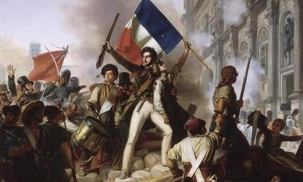
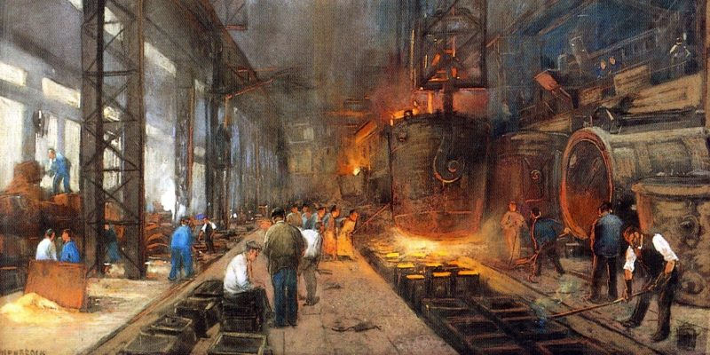
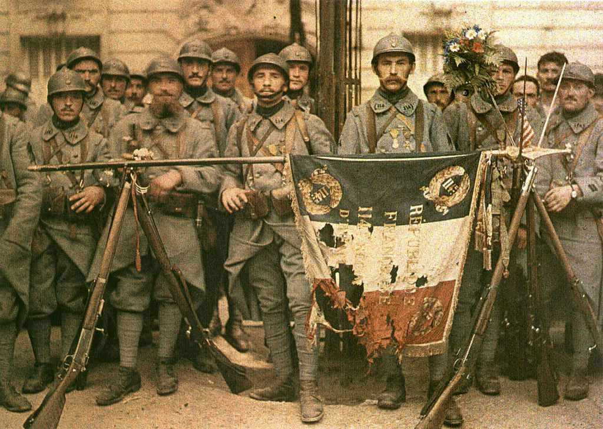
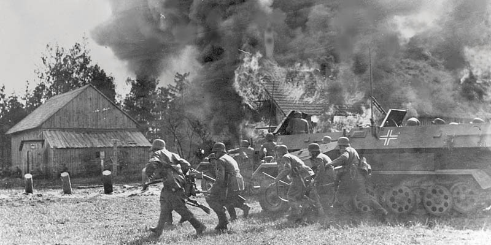
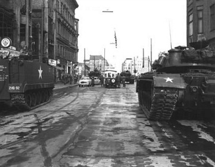
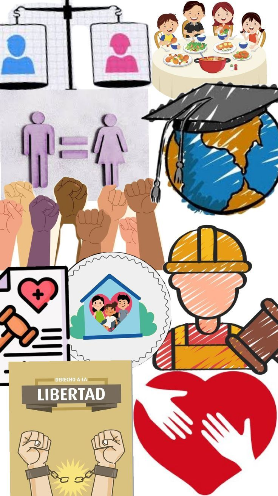
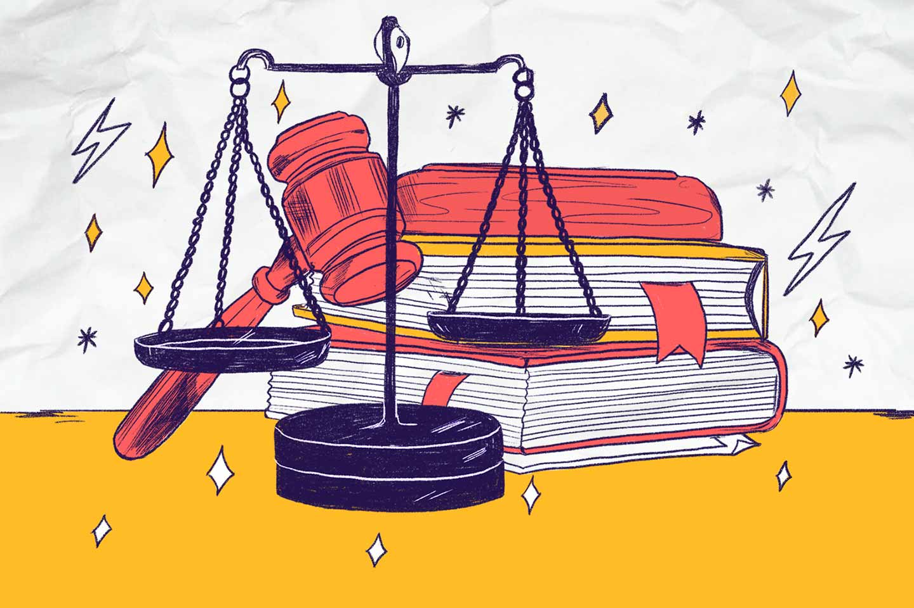
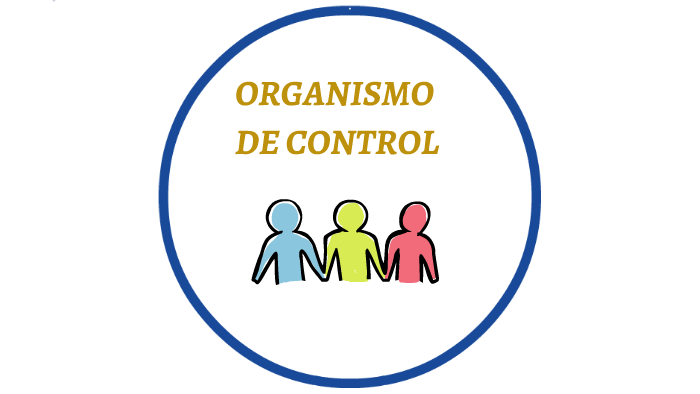
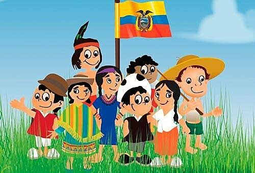

1810 – 1830
Independencia de Colombia
El proceso emancipador que rompió tres siglos de dominio español y forjó la nueva república en América del Sur.
1467 ⧗ 1603
Período Sengoku
La era de los estados en guerra en el Japón feudal, marcada por brutales conflictos militares y el ascenso de los samuráis.
18 de Junio de 1815
Batalla de Waterloo
El histórico y definitivo enfrentamiento en Bélgica que marcó la caída final de Napoleón Bonaparte y su imperio.
Siglos XIV – XVII
El Renacimiento
El renacer cultural, artístico y científico que quebró el teocentrismo medieval y abrió las puertas a la Modernidad.

1789 ⧗ 1799
Revolución Francesa
El levantamiento popular que derrocó el absolutismo monárquico y proclamó la Declaración de los Derechos del Hombre.

Siglos XVIII - XIX
Revolución Industrial
El salto tecnológico y económico del vapor que originó el capitalismo moderno y la consolidación del movimiento obrero.

1914 – 1918
Primera Guerra Mundial
La Gran Guerra de trincheras detonada por tensiones imperialistas que puso fin a los antiguos imperios dinásticos.

1939 – 1945
Segunda Guerra Mundial
El conflicto total contra los totalitarismos fascistas que dio paso a la creación de las Naciones Unidas (ONU).

1947 – 1991
La Guerra Fría
El orden mundial bipolar determinado por la rivalidad ideológica, económica y nuclear entre EE.UU. y la URSS.
1899 – 1902
Guerra de los Mil Días
La más sangrienta guerra civil bipartidista en Colombia que devastó la economía y propició la separación de Panamá.
1948 – 1974
Violencia y Frente Nacional
Desde el trágico Bogotazo hasta el pacto bipartidista que alternó las presidencias excluyendo otros sectores.
Fines del Siglo XX - Presente
Conflicto Interno Colombiano
Surgimiento de guerrillas, paramilitarismo y narcotráfico; dinámicas críticas evaluadas de forma constante en el examen ICFES.
Norma de Normas
Constitución de 1991
Nuestra Carta Magna vigente que refundó a Colombia como un Estado Social de Derecho y amplió la democracia participativa.

Título II CP
Derechos y Deberes
Garantías fundamentales (vida, libertad) y colectivos (medio ambiente sano) amparados por el orden constitucional.
Democracia Activa
Mecanismos de Participación
El voto, el plebiscito, el referendo y la consulta popular: herramientas con las que el pueblo ejerce su soberanía.
Estructura del Estado
Ramas del Poder Público
Ejecutiva, Legislativa y Judicial. La división del poder público estructurada para asegurar los frenos y contrapesos constitucionales.

Garantías Ciudadanas
Tutela y Derecho de Petición
Herramientas jurídicas inmediatas para exigir el respeto de los derechos fundamentales y elevar solicitudes respetuosas.

Vigilancia Nacional
Órganos de Control
Procuraduría, Contraloría y Defensoría del Pueblo. Entidades autónomas delegadas para resguardar el patrimonio y la gestión pública.
Convivencia y Paz
Mecanismos MASC
La conciliación, mediación y amigable composición orientadas a resolver controversias pacíficamente sin pleitos judiciales.
Principios Constitucionales
Estado Social de Derecho
Modelo estatal comprometido con la defense de la dignidad humana, la equidad social y los servicios públicos esenciales.

Pluralismo Colombiano
Diversidad Étnica
El reconocimiento constitucional que ampara los saberes, identidades y las autonomías indígenas y afrodescendientes.
Leyes Internacionales
Bloque de Constitucionalidad
Normas y tratados mundiales sobre Derechos Humanos incorporados con rango constitucional en el ordenamiento interno.
Poder Popular
Democracia y Soberanía
El análisis crítico de los sistemas políticos y cómo la soberanía reside exclusivamente en el pueblo.
Relaciones Mundiales
Globalización y DD.HH.
El impacto de las políticas globales en la soberanía interna y los retos para proteger la dignidad humana en el siglo XXI.